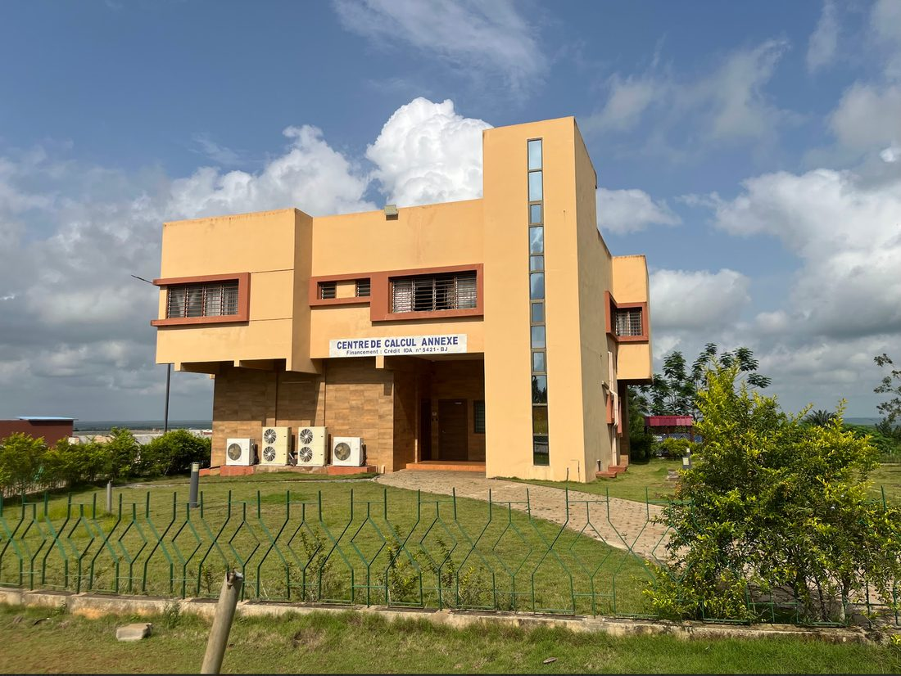

Les organes
- Assemblée Générale — l'organe souverain, réunit l'ensemble des membres.
- Bureau exécutif — pilote l'association (mandat de 2 ans, renouvelable une fois).
- Commissariat aux comptes — assure le contrôle financier.
Unir les anciens et actuels préparationnaires de l'IMSP, soutenir leur réussite et contribuer au rayonnement de l'Institut.
Mission
Le RACP-IMSP est né d'un constat simple : l'expérience accumulée par les anciens préparationnaires est une ressource précieuse, trop souvent perdue. Notre mission est de la transmettre.
Plusieurs défis subsistaient : l'absence d'un cadre formel d'échange entre anciens et promotions actuelles, le manque de ressources académiques organisées, et une visibilité insuffisante des débouchés académiques et professionnels. Le réseau répond à ces trois besoins.

L'Institut
L'Institut de Mathématiques et de Sciences Physiques (IMSP) de Dangbo, créé en 1988, est un centre d'excellence de l'Université d'Abomey-Calavi, reconnu internationalement pour la qualité de sa formation et de sa recherche. Il abrite les Classes Préparatoires aux Grandes Écoles (CPGE), un cursus intensif de deux ans.
Le réseau prolonge cette ambition au-delà des murs de l'Institut, en gardant le contact entre celles et ceux qui y sont passés.
Visiter le site officiel de l'IMSPGouvernance
Une structure associative claire, au service de ses membres, encadrée par des statuts et un règlement intérieur.
Président·e, Vice-Président·e, Secrétaire Général·e, Trésorier·e, Responsable Communication, Commissaire aux comptes.
Le détail des responsabilités figure dans le règlement intérieur.
Consulter les textesNotre organisation
Au-delà des organes statutaires, l'action du RACP-IMSP s'articule autour de quatre pôles opérationnels complémentaires, chacun porteur d'une mission claire.
Pôle 1
Créer de la valeur intellectuelle et professionnelle pour les membres.
Pôle 2
Donner de la visibilité et structurer la croissance.
Pôle 3
Assurer la durabilité financière et stratégique.
Pôle 4
Activer la communauté.
Cap
Ce que le réseau vise concrètement, à mesure qu'il se structure.
Ce qui nous guide
01
Personne ne réussit seul. Ce qu'une promotion a appris, elle le doit à la suivante.
02
Viser haut, avec honnêteté et sans jugement. Le niveau se transmet par l'exemple, pas par la pression.
03
Du Bénin à la diaspora, le réseau relie les parcours sans frontière de filière ni de pays.